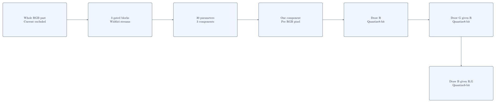
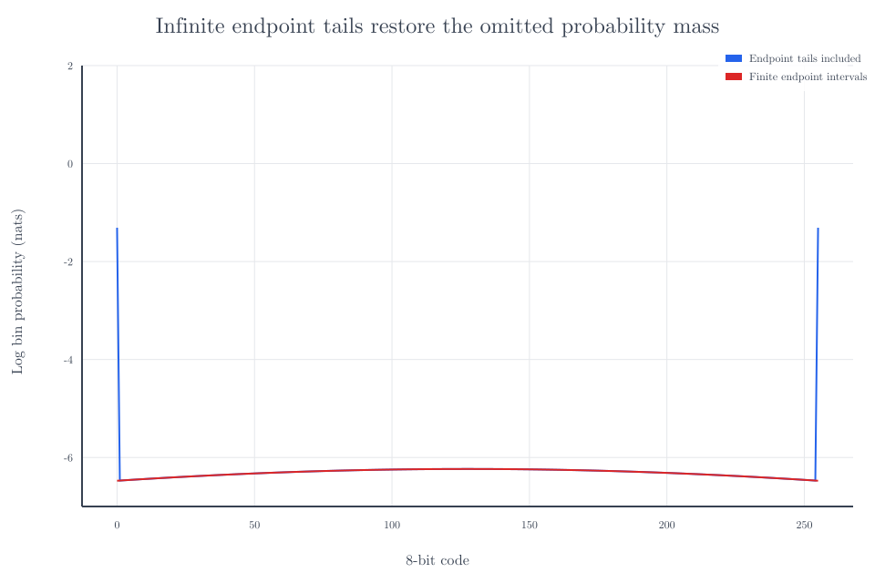
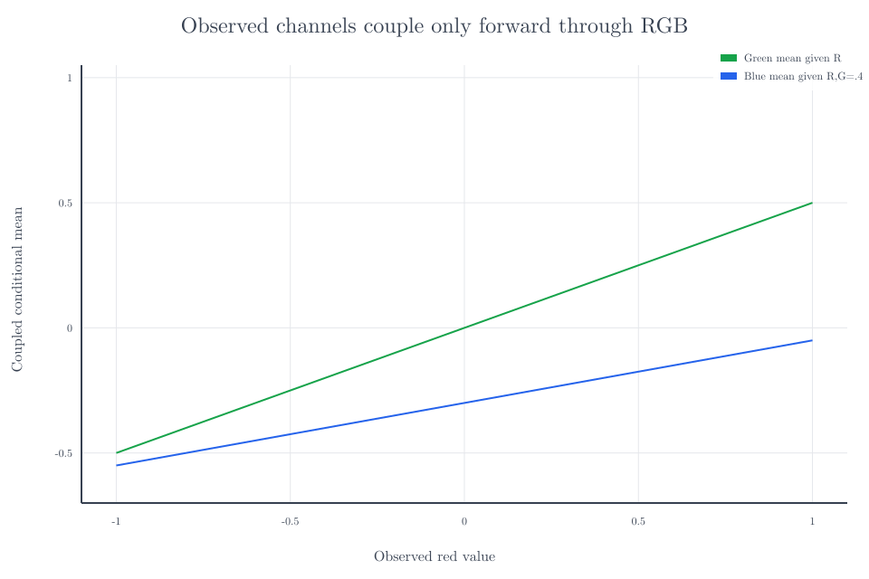
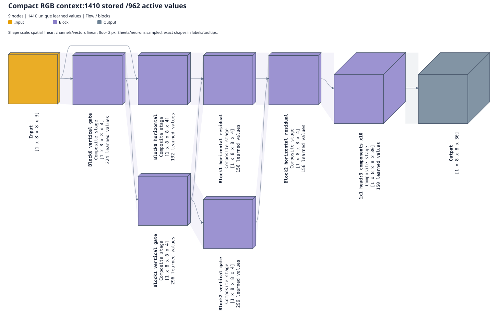
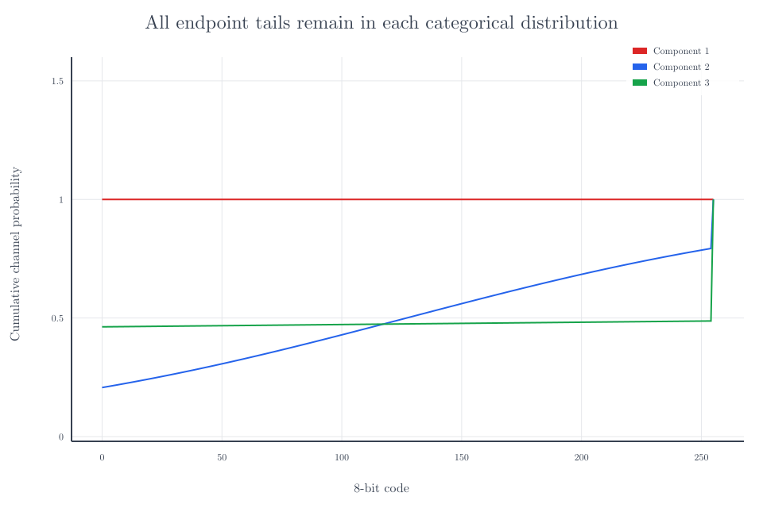
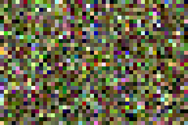
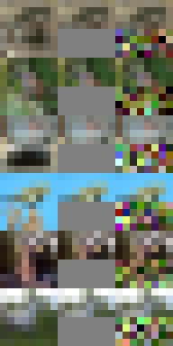
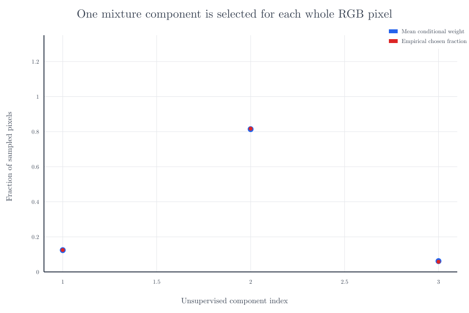

PixelCNN++: Quantized RGB Logistic Mixtures
Abstract
A whole-pixel-causal context predicts a mixture of discretized RGB logistic conditionals. Endpoint bins include infinite tails; green and blue means use preceding observed channels during likelihood evaluation and preceding sampled, quantized channels during generation. Worked normalization and coupling checks precede the original CIFAR-10 teaching protocol: exact integer4x4 area means to 8x8, three width4 gated blocks, three mixture components and48 Adam updates. The fixed-final test loss is7.48424 bits per8-bit RGB channel, compared with a fit-only per-channel histogram's7.91458 and uniform8. Matching source records, causal derivatives and sampled codes establish fidelity of this small run; they do not establish natural-image quality or published benchmark performance.
Separate past-pixel context from within-pixel dependence
[Salimans, Karpathy, Chen and Kingma, PixelCNN++: Improving the PixelCNN with Discretized Logistic Mixture Likelihood and Other Modifications (2017)](https://arxiv.org/abs/1701.05517) combines whole-pixel conditioning with a discretized logistic mixture likelihood. This compact teaching variant keeps that likelihood and channel coupling but uses only three width4 gated blocks. It has no multiscale downsampling, dropout, labels, pooling, normalization or batch-coupled statistics. It is not the published large CIFAR-10 model.
The dual-stream context uses vertical3x3 and horizontal1x3 masks. First-block masks exclude *the whole current RGB pixel*, not just its current channel. Later vertical current-row features already depend only on earlier raw rows; horizontal residuals are used after the first block. Each block has an unbiased1x1 vertical-to-horizontal link, tanh×sigmoid gates and a biased1x1 horizontal projection. A final biased1x1 head emits30 numbers per pixel. For each of three components the layout is
All30 numbers depend only on preceding raw pixels. Their mixture logit becomes a normalized weight through softmax; the other nine parameters define one RGB conditional. A single component is chosen for the entire RGB pixel, followed by sequential red, green and blue draws. There is no independent component selection for each channel.
#include <dm/dm.hpp>
int main(){
std::filesystem::create_directories("build");
dm::graphics::Diagram d(76,1900);dm::graphics::DiagramNodeStyle s;
s.width=9;s.height=4.8;s.font_size=31;
d.node("past",{-29,2},"Whole RGB past\nCurrent excluded",s)
.node("context",{-17,2},"3 gated blocks\nWidth4 streams",s)
.node("head",{-5,2},"30 parameters\n3 components",s)
.node("choice",{7,2},"One component\nPer RGB pixel",s)
.node("red",{19,2},"Draw R\nQuantize8-bit",s)
.node("green",{31,2},"Draw G given R\nQuantize8-bit",s)
.node("blue",{31,-7},"Draw B given R,G\nQuantize8-bit",s)
.edge("past","context").edge("context","head").edge("head","choice")
.edge("choice","red").edge("red","green").edge("green","blue")
.save_svg("build/pp_method.svg");
}
Hand-check all256 bins and their infinite endpoint tails
For one channel, let x=code/127.5−1, s=max(raw_logscale,−7), h=(x−mu+step)exp(−s), l=(x−mu−step)exp(−s), and Delta=width exp(−s). The stable interior log mass is
The source uses Float32 step=1/255 and width=2/255, promoted even in Double arithmetic. This exact source choice is retained. At the lower endpoint use −softplus(−h), the mass extending to negative infinity. At the upper endpoint use−softplus(l), extending to positive infinity. The implemented tail guards are x<=Float32(−.999) and x>=Float32(.999). For the256 code centers these select exactly the two endpoint codes. Raw scales clip below−7; ties retain the raw-scale derivative. No mean clipping or small-mass approximation is used.
A zero-mean unit-scale logistic gives each endpoint a substantial tail mass. The following no-fit example enumerates every byte, with one component and zero coupling. The first channel's256 masses sum to one within source rounding; using finite-width intervals for the endpoint codes would leave mass outside [-1,1] unaccounted for. All numerical calculations use the native tensor API.
#include <dm/dm.hpp>
int main(){
namespace n=dm::nn;auto t=n::DType::Float64;
auto codes=n::arange(0,256);auto x=n::cast(codes,t)/127.5-1;
auto rgb=n::tile(n::reshape(x,{256,1}),{1,3});
auto out=n::models::DiscretizedLogisticRGB(rgb,n::zeros({256,10},t),1);
auto logmass=n::reshape(n::slice_axis(out.channel_log_mass,2,0,1),{256});
auto mass=n::exp(logmass);auto total=n::sum(mass).item();
if(std::abs(total-1)>2e-5)throw std::runtime_error("Tail normalization");
const double step=float(1.f/255);
auto truncated=n::sigmoid(x+step)-n::sigmoid(x-step);
dm::graphics::RPlot::create().lines(codes.to_vector<double>(),logmass.to_vector<double>(),"Endpoint tails included",{37,99,235})
.lines(codes.to_vector<double>(),n::log(truncated).to_vector<double>(),"Finite endpoint intervals",{220,38,38})
.y_limits(-7,2).x_label("8-bit code").y_label("Log bin probability (nats)")
.title("Infinite endpoint tails restore the omitted probability mass").save_svg("build/pp_bin_toy.svg");
std::print("Native full-grid mass: {:.8f}; finite-interval-only mass: {:.8f}.\n",total,n::sum(truncated).item());
}Native full-grid mass: 1.00000003; finite-interval-only mass: 0.46365784.

Hand-check triangular RGB mean coupling
For a given component, coefficients are alpha=tanh(cRG), beta=tanh(cBR), gamma=tanh(cBG). The teacher-forced conditional means are
The RGB component log probability is the sum of its three conditional channel log masses. Add normalized mixture log weights and apply stable logsumexp over components. Its stabilizing maximum is stopped; applicable first and higher paths through the mixture remain live. The model loss averages joint RGB pixel NLL and divides by three, so it is *nats per RGB channel*. Image joint NLLs instead sum all64 RGB pixel NLLs without dividing by three.
Set base means to zero and(alpha,beta,gamma)=(.5,.25,−.75). Hold observed green at.4 and vary observed red. Then mG=.5R and mB=.25R−.3. These continuous toy inputs check the live formula; real observations later use exact byte centers. During generation, replace the observed R/G by already *sampled and quantized* R/G. Replacing them with unquantized draws or with component means changes the source model's sampling distribution.
#include <dm/dm.hpp>
int main(){
namespace n=dm::nn;auto t=n::DType::Float64;
auto r=n::tensor({-1.,-.5,0.,.5,1.},{5,1},t);auto x=n::concat({r,n::full({5,1},.4,t),n::zeros({5,1},t)},1);
std::vector<double> row(10);row[7]=std::atanh(.5);row[8]=std::atanh(.25);row[9]=std::atanh(-.75);
auto p=n::tile(n::from_vector(row,{1,10}),{5,1}).requires_grad_();
auto o=n::models::DiscretizedLogisticRGB(x,p,1);auto means=n::reshape(o.means,{5,3});
auto green=n::slice_axis(means,1,1,2),blue=n::slice_axis(means,1,2,3);
if(n::max(n::abs(green-.5*r)).item()>1e-14||n::max(n::abs(blue-(.25*r-.3))).item()>1e-14)throw std::runtime_error("Coupling identity");
auto g=n::grad(o.mean_channel_nll,{p})[0];
if(n::max(n::abs(n::slice_axis(g,1,7,10))).item()==0)throw std::runtime_error("Coupling path");
dm::graphics::RPlot::create().lines(r.to_vector<double>(),green.to_vector<double>(),"Green mean given R",{22,163,74})
.lines(r.to_vector<double>(),blue.to_vector<double>(),"Blue mean given R,G=.4",{37,99,235})
.y_limits(-.7,1.05).x_label("Observed red value").y_label("Coupled conditional mean")
.title("Observed channels couple only forward through RGB").save_svg("build/pp_coupling_toy.svg");
}
Trace the actual compact context architecture
There are1410 stored values in23 ordered leaves,962 active and448 structurally masked. Kernels initialize normal(.1), biases zero, using native seed8609. The following diagram is traced from the executable context, not from invented layer dimensions. The30-channel head is component-major. Its parameters do not see current R/G; those dependencies arise only in the separately evaluated likelihood. No hidden optimizer or training loop is part of either native call.
#include <dm/dm.hpp>
int main(){
namespace n=dm::nn;n::ParameterStore p(8609);
n::Module model([&](const n::Tensor& x){
auto o=n::models::GatedPixelConvolutional(p,x,n::Tensor(),false,3,30);
n::model_stage("Block0 vertical gate",x,o.vertical0);
n::model_stage("Block0 horizontal",std::vector<n::Tensor>{x,o.vertical0},o.horizontal0);
n::model_stage("Block1 vertical gate",o.vertical0,o.vertical1);
n::model_stage("Block1 horizontal residual",std::vector<n::Tensor>{o.horizontal0,o.vertical1},o.horizontal1);
n::model_stage("Block2 vertical gate",o.vertical1,o.vertical);
n::model_stage("Block2 horizontal residual",std::vector<n::Tensor>{o.horizontal1,o.vertical},o.horizontal);
return n::model_stage("1x1 head:3 components x10",o.horizontal,o.logits);
},"Compact RGB context:1410 stored /962 active values");
n::ModelPlotOptions options;options.detail=n::ModelPlotDetail::Blocks;options.sizing.minimum_extent=2;options.sizing.max_planes=4;
auto fig=model.plot(n::zeros({1,8,8,3}),options);
if(fig.parameter_count()!=1410||p.size()!=23)throw std::runtime_error("Source census");
fig.save_svg("build/pp_network.svg");
}
Preserve the original data, optimizer and generation protocol
Native datasets::fetch("cifar10") obtains the canonical binary files through
the configurable cache. nn::data::LoadCifar retains integer RGB bytes and
labels. The original fixed selections are data_batch_1.bin rows0..127 for fit,
rows128..159 for validation, and test_batch.bin rows64..95 for test. Test IDs
add50000. These pools are disjoint by source record ID; no duplicate-image audit
is claimed. All original labels are retained for provenance and are *unused*
by the density. No TF initial arrays were present, so the native seed8609 path
is the frozen source run; this is not a claim of recorded TF trajectory parity.
RgbAreaPixels averages each disjoint4x4 block with integer sums, rounds its
mean half-up to an8-bit code, then computes double(code)/127.5−1 and casts once
to Float32. This exact quantization differs from floating bilinear resizing,
from binarization, and from modelling the original32x32 RGB images. The archive
retains the original bytes, codes, signed images, labels and source IDs.
Three epochs use Adam.003 with default beta1=.9,beta2=.999,epsilon=1e−8, batch8 and BatchOrder(128,8,8623), exactly48 updates. There is no validation checkpoint selection, tuning, schedule, clipping or refit. The final third-epoch store is the fixed endpoint. Every gradient, updated array and iteration count is saved. All448 masked raw coordinates and their partials remain unchanged or zero after every write. A fresh store restores final.npz bit identically.
The full editable program below includes the entire raster sampler. A midpoint MT19937 bank has shape[N,64,4], drawn case first, then pixel, then stream. At each pixel, stream0 selects a component by cumulative softmax weights using strict u<cumulative; streams1,2,3 supply inverse-logistic R/G/B draws. Clamp each draw to[-1,1], round floor((value+1)*127.5+.5), then normalize the resulting code before using it to couple the next channel. Component selection and all sampling transforms use native tensor operations. Final24-sample and epoch8-sample banks use seed8639; six prefix completions use8641. Prefix generation preserves the first32 whole RGB pixels (the top four rows). It still draws the full bank, leaves saved prefix parameters zero and prefix component IDs−1. Gray unknown values occur only in the presentation gallery, never in the conditioning input.
#include <dm/dm.hpp>
namespace n=dm::nn;namespace m=n::models;
using T=n::Tensor;using A=std::map<std::string,T>;namespace fs=std::filesystem;
void Save(const fs::path& file,const A& fields){
n::NamedTensors named;for(const auto& [key,value]:fields)named.emplace_back(key,value);
n::save_npz(file.string(),named);
}
A Weights(const n::ParameterStore& p){
A out;for(const auto& name:p.names())out.emplace(name,p.at(name).detach().clone());return out;
}
bool Equal(const A& a,const A& b){
if(a.size()!=b.size())return false;
for(const auto& [key,value]:a)if(!b.count(key)||!n::equal_bits(value,b.at(key)))return false;
return true;
}
A Partials(const n::ParameterStore& p,const std::vector<T>& g){
A out;for(std::size_t k=0;k<g.size();++k)out.emplace(p.names()[k],g[k].detach());return out;
}
A Evaluate(n::ParameterStore& p,const T& x){
n::NoGradGuard guard;auto o=m::PixelCnnPP(p,x);
return {{"parameters",o.parameters},{"vertical",o.vertical},{"horizontal",o.horizontal},
{"pixel_log_probability",o.pixel_log_probability},{"component_log_probability",o.component_log_probability},
{"mixture_log_probability",o.mixture_log_probability},{"means",o.means},{"log_scales",o.log_scales},
{"coefficients",o.coefficients},{"channel_log_mass",o.channel_log_mass},{"per_image_nll",o.per_image_nll},{"loss",o.loss}};
}
A Sample(n::ParameterStore& p,int count,std::uint32_t seed,const T& prefix={},int prefix_size=0){
n::NoGradGuard guard;auto f64=n::DType::Float64;
std::mt19937 rng(seed);std::vector<double> values(static_cast<std::size_t>(count*64*4));
for(auto& u:values)u=(double(rng())+.5)/4294967296.;
auto bank=n::from_vector(values,{count,64,4});
auto sites=n::reshape(n::arange(0,64),{1,64,1});
auto canvas=n::zeros({count,64,3}),raw=n::zeros({count,64,30});
auto components=n::full({count,64},-1,n::DType::Int32);
if(prefix_size)canvas=n::where(n::less(sites,prefix_size),n::reshape(prefix,{count,64,3}),canvas);
for(int site=prefix_size;site<64;++site){
auto head=n::reshape(m::GatedPixelConvolutional(p,n::reshape(canvas,{count,8,8,3}),T(),false,3,30).logits,{count,64,30});
auto at=n::slice_axis(head,1,site,site+1);
auto params=n::reshape(n::cast(at,f64),{count,3,10});
auto logits=n::select(params,2,0);auto mass=n::exp(logits-n::max(logits,{1},true));
auto cdf=n::cumsum(mass/n::sum(mass,{1},true),1);
auto u=n::reshape(n::slice_axis(bank,1,site,site+1),{count,4});
auto chosen=n::cast(n::minimum(n::sum(n::cast(n::greater_equal(n::slice_axis(u,1,0,1),cdf),n::DType::Int32),{1}),n::full({count},2,n::DType::Int32)),n::DType::Int32);
auto one=n::one_hot(chosen,3,1,0,f64);
auto selected=n::sum(params*n::expand_dims(one,2),{1});
std::vector<T> channels;
for(int c=0;c<3;++c){
auto mean=n::slice_axis(selected,1,c+1,c+2);
if(c==1)mean=mean+n::tanh(n::slice_axis(selected,1,7,8))*n::cast(channels[0],f64);
if(c==2)mean=mean+(n::tanh(n::slice_axis(selected,1,8,9))*n::cast(channels[0],f64)+
n::tanh(n::slice_axis(selected,1,9,10))*n::cast(channels[1],f64));
auto scale=n::exp(n::maximum(n::slice_axis(selected,1,c+4,c+5),n::full({count,1},-7,f64)));
auto draw=n::slice_axis(u,1,c+1,c+2);
auto sample=mean+scale*(n::log(draw)-n::log1p(-draw));
auto code=n::floor((n::clip(sample,-1,1)+1)*127.5+.5);
channels.push_back(n::cast(code/127.5-1,n::DType::Float32));
}
auto at_site=n::equal(sites,site);
canvas=n::where(at_site,n::reshape(n::concat(channels,1),{count,1,3}),canvas);
raw=n::where(at_site,at,raw);
components=n::where(n::equal(n::reshape(sites,{1,64}),site),n::reshape(chosen,{count,1}),components);
}
return {{"images",n::reshape(canvas,{count,8,8,3})},{"uniform",bank},{"parameters",raw},{"components",components}};
}
void Algebra(const fs::path& root){
for(bool normalization:{true,false}){
const int count=normalization?256:8;
std::vector<float> images(count*3),parameters(count*30);
for(int i=0;i<count;++i){
for(int c=0;c<3;++c){int code=normalization?i:(i*37+c*113)%256;
if(!normalization&&i<2)code=i?255:0;
images[i*3+c]=float(double(code)/127.5-1);}
for(int k=0;k<3;++k)for(int j=0;j<10;++j){
float value=normalization?0:float(.3*std::sin((i*30+k*10+j)*.37));
if(j==0&&normalization)value=k==0?-80:k==1?0:80;
if(j>=1&&j<=3&&normalization)value=k==0?-2:k==1?0:2;
if(j>=4&&j<=6)value=normalization?(k==0?-7:k==1?-.3f:3.f):(k==0?-8:k==1?-.4f:2.f);
if(!normalization&&j>=4&&j<=6)value+=.13f*(j-4);
parameters[i*30+k*10+j]=value;
}
}
auto x=n::from_vector(images,{count,1,1,3});auto p=n::from_vector(parameters,{count,1,1,30}).requires_grad_();
auto o=m::DiscretizedLogisticRGB(x,p);auto g=n::grad(o.mean_channel_nll,{p})[0];
Save(root/(normalization?"normalization.npz":"likelihood_fixture.npz"),{{"images",x},{"parameters",p.detach()},
{"loss",o.mean_channel_nll.detach()},{"gradient",g.detach()},{"pixel_log_probability",o.pixel_log_probability.detach()},
{"component_log_probability",o.component_log_probability.detach()},{"mixture_log_probability",o.mixture_log_probability.detach()},
{"channel_log_mass",o.channel_log_mass.detach()}});
if(normalization){auto total=n::sum(n::exp(n::cast(o.channel_log_mass,n::DType::Float64)),{0});
if(n::max(n::abs(total-1)).item()>2e-5)throw std::runtime_error("All256 bins and endpoint tails must normalize");}
}
}
int main(){
const fs::path root="build/pixel_cnn_pp";fs::create_directories(root/"phases");n::set_num_threads(4);
const fs::path data_root=dm::datasets::fetch("cifar10");
const auto train=n::data::LoadCifar({data_root/"data_batch_1.bin"},n::data::Cifar::k10);
const auto test=n::data::LoadCifar({data_root/"test_batch.bin"},n::data::Cifar::k10);
std::vector<T> images,codes;A data;std::vector<std::string> names{"fit","validation","test"};
for(int k=0;k<3;++k){
int start=k==0?0:k==1?128:64,count=k==0?128:32;const auto& source=k==2?test:train;
auto original=n::slice_axis(source.images,0,start,start+count).contiguous();auto prep=m::RgbAreaPixels(original);
images.push_back(prep.images);codes.push_back(prep.codes);
data[names[k]+"_original"]=original;data[names[k]+"_codes"]=prep.codes;data[names[k]+"_images"]=prep.images;
data[names[k]+"_labels"]=n::slice_axis(source.labels,0,start,start+count).contiguous();
data[names[k]+"_source_ids"]=n::cast(n::arange(start+(k==2?50000:0),start+count+(k==2?50000:0)),n::DType::Int32);
}
Save(root/"data.npz",data);Algebra(root);
n::ParameterStore p(8609);{n::NoGradGuard guard;m::PixelCnnPP(p,n::zeros({1,8,8,3}));}
if(p.count()!=1410||p.size()!=23)throw std::runtime_error("Source1410/23 census");
const auto initial=Weights(p);Save(root/"initial_arrays.npz",initial);Save(root/"initial_outputs.npz",Evaluate(p,images[2]));
A masks;int masked=0;
for(int block=0;block<3;++block)for(bool vertical:{false,true}){
auto key="block"+std::to_string(block)+(vertical?"/vertical/W":"/horizontal/W");
masks[key]=m::GatedPixelMask(block?4:3,vertical,block==0);
masked+=int(n::sum(n::cast(n::equal(masks.at(key),0),n::DType::Int32)).item());
}
if(masked!=448)throw std::runtime_error("448 masked coordinates");
n::Optimizer optimizer(p,.003,{n::OptimizerKind::Adam});n::BatchOrder order(128,8,8623);
std::ofstream batches(root/"batches.tsv"),history(root/"history.tsv");history.precision(17);
batches<<"epoch\tstep\trow\n";history<<"epoch\tvalidation_nll_per_RGB_channel\tvalidation_bits_per_RGB_channel\n";
std::vector<double> validation;T first;int updates=0;
for(int epoch=1;epoch<=3;++epoch){
order.begin_epoch();for(;;){auto rows=order.next();if(rows.empty())break;
auto x=n::take_rows(images[0],rows);if(!updates){first=x;Save(root/"first_batch.npz",{{"images",x}});Save(root/"first_forward.npz",Evaluate(p,x));}
auto o=m::PixelCnnPP(p,x);auto gradients=n::grad(o.loss,p.parameters());auto partials=Partials(p,gradients);
const auto phase=root/"phases"/("batch"+std::to_string(updates));Save(phase.string()+"-gradient.npz",partials);
if(!updates)Save(root/"initial_gradients.npz",partials);
optimizer.step(gradients);auto after=Weights(p);Save(phase.string()+"-after.npz",after);
Save(phase.string()+"-iterations.npz",{{"iterations",n::from_vector(std::vector<std::int64_t>{optimizer.iterations()},{1})}});
if(!updates)Save(root/"first_after.npz",after);
for(const auto& [key,mask]:masks){auto blocked=n::equal(mask,0);auto zero=n::zeros_like(mask);
if(!n::equal_bits(n::where(blocked,initial.at(key),zero),n::where(blocked,after.at(key),zero))||
n::max(n::abs(n::where(blocked,partials.at(key),zero))).item()!=0)throw std::runtime_error("Masked weights or partials changed");}
for(auto row:rows)batches<<epoch<<'\t'<<updates<<'\t'<<row<<'\n';++updates;
}
double loss=Evaluate(p,images[1]).at("loss").item();history<<epoch<<'\t'<<loss<<'\t'<<loss/std::log(2.)<<'\n';validation.push_back(loss/std::log(2.));
Save(root/("epoch"+std::to_string(epoch)+"_arrays.npz"),Weights(p));
Save(root/("epoch"+std::to_string(epoch)+"_samples.npz"),Sample(p,8,8639));
}
if(updates!=48||optimizer.iterations()!=48)throw std::runtime_error("48 Adam writes");
p.save((root/"final.npz").string());Save(root/"final_gradients.npz",Partials(p,n::grad(m::PixelCnnPP(p,first).loss,p.parameters())));
n::ParameterStore restored(8609);{n::NoGradGuard guard;m::PixelCnnPP(restored,n::zeros({1,8,8,3}));}
restored.load((root/"final.npz").string(),true);if(!Equal(Weights(p),Weights(restored)))throw std::runtime_error("Fresh restore");
const auto before=Weights(restored),out=Evaluate(restored,images[2]);Save(root/"model_arrays.npz",before);Save(root/"outputs.npz",out);
auto single=n::take_rows(images[2],{0}),head=Evaluate(restored,single).at("parameters");
if(n::max(n::abs(head-n::take_rows(out.at("parameters"),{0}))).item()>2e-6)throw std::runtime_error("Single/batch head parity");
std::vector<T> jacobian;
auto sites=n::reshape(n::arange(0,64),{1,8,8,1});
for(int site=0;site<64;++site){auto input=single.detach().clone().requires_grad_();
auto parameters=n::reshape(m::GatedPixelConvolutional(restored,input,T(),false,3,30).logits,{1,64,30});
auto g=n::reshape(n::grad(n::sum(n::slice_axis(parameters,1,site,site+1)),{input})[0],{64,3});
if(n::max(n::abs(n::slice_axis(g,0,site,64))).item()!=0)throw std::runtime_error("Whole current/future RGB derivatives");
auto changed=n::where(n::greater_equal(sites,site),-single,single);auto changed_head=Evaluate(restored,changed).at("parameters");
if(n::max(n::abs(n::slice_axis(n::reshape(changed_head-head,{1,64,30}),1,0,site+1))).item()!=0)throw std::runtime_error("Whole-pixel future flip");
jacobian.push_back(g.detach());
}
Save(root/"causality.npz",{{"images",single},{"parameters",head},{"jacobian",n::stack(jacobian)}});
auto samples=Sample(restored,24,8639);Save(root/"samples.npz",samples);if(!Equal(samples,Sample(restored,24,8639)))throw std::runtime_error("Repeated RGB sampling");
auto truth=n::take_rows(images[2],{0,1,2,3,4,5});auto completion=Sample(restored,6,8641,truth,32);completion["truth"]=truth;
Save(root/"completions.npz",completion);
if(!n::equal_bits(n::slice_axis(n::reshape(truth,{6,64,3}),1,0,32),n::slice_axis(n::reshape(completion.at("images"),{6,64,3}),1,0,32)))throw std::runtime_error("Known prefix changed");
auto observed=n::where(n::less(sites,32),truth,n::zeros_like(truth));
auto gallery=n::reshape(n::stack({truth,observed,completion.at("images")},1),{18,8,8,3});Save(root/"completion_gallery.npz",{{"images",gallery}});
n::save_image_grid(samples.at("images"),(root/"samples.png").string(),6,-1,1,0,220/255.,8);
n::save_image_grid(gallery,(root/"completions.png").string(),3,-1,1,0,220/255.,8);
if(!Equal(before,Weights(restored)))throw std::runtime_error("Inference mutation");
{n::NoGradGuard guard;auto f64=n::DType::Float64;
auto counts=n::sum(n::one_hot(codes[0],256,1,0,f64),{0,1,2});auto baseline=(counts+.5)/(128*64+128.);
Save(root/"baseline.npz",{{"probability",baseline}});
auto hot=n::one_hot(codes[2],256,1,0,f64);auto b_loss=-n::mean(n::sum(hot*n::log(n::reshape(baseline,{1,1,1,3,256})),{4}));
Save(root/"summary.npz",{{"validation_bits",n::from_vector(validation,{3})},{"test_bits",n::cast(out.at("loss"),f64)/std::log(2.)},
{"baseline_bits",b_loss/std::log(2.)},{"uniform_bits",n::full({},8,f64)}});
std::print("| Fixed protocol | Value |\n|---|---:|\n| CIFAR fit / validation / test |128 /32 /32|\n| Stored / active / masked values |1410 /962 /448|\n| Epochs / Adam updates |3 /48|\n| Whole-pixel causal entries checked |12288|\n| Test bits per8-bit RGB channel |{:.6f}|\n| Fit-only channel histogram |{:.6f}|\n| Uniform baseline |8|\n",out.at("loss").item()/std::log(2.),b_loss.item()/std::log(2.));
}
}| Fixed protocol | Value |
|---|---|
| CIFAR fit / validation / test | 128 /32 /32 |
| Stored / active / masked values | 1410 /962 /448 |
| Epochs / Adam updates | 3 /48 |
| Whole-pixel causal entries checked | 12288 |
| Test bits per8-bit RGB channel | 7.484238 |
| Fit-only channel histogram | 7.914579 |
| Uniform baseline | 8 |
Inspect the selected byte images and quantized observations
The top row shows the first eight fitting images at original32x32 resolution. The bottom row shows the exact8x8 quantized observations enlarged by nearest neighbor to the same display size. These are RGB density observations, not classifier features. Every displayed case is fixed by the source order.
#include <dm/dm.hpp>
int main(){
namespace n=dm::nn;std::map<std::string,n::Tensor> a;for(auto& [k,v]:n::load_npz("build/pixel_cnn_pp/data.npz"))a.emplace(k,v);
auto original=n::cast(n::slice_axis(a.at("fit_original"),0,0,8),n::DType::Float32)/127.5-1;
auto low=n::slice_axis(a.at("fit_images"),0,0,8);
auto enlarged=n::resize_nearest(low,{32,32});
n::save_image_grid(n::concat({original,enlarged},0),"build/pp_data.png",8,-1,1,1,.5,2);
}Keep extreme likelihood fixtures and endpoint normalization visible
The original normalization fixture enumerates all256 byte centers for each of three components and three channels. It includes logits(−80,0,80), means (−2,0,2) and log scales(−7,−.3,3), with zero coupling. Every channel/component mass sums to one within2e−5. An additional eight-case fixture includes both endpoint bins, nonzero coupling and raw scales below−7. All saved likelihood fields and all fixture parameter partials are finite. The source archive and the independent oracle retain every case; none is silently dropped as a tail.
The CDF plot below displays all256 bins for each component's red-channel fixture. Green and blue have the same uncoupled parameters in this specific normalization fixture; all nine distributions are checked numerically.
#include <dm/dm.hpp>
int main(){
namespace n=dm::nn;n::Tensor mass;for(auto& [k,v]:n::load_npz("build/pixel_cnn_pp/normalization.npz"))if(k=="channel_log_mass")mass=n::exp(n::cast(v,n::DType::Float64));
auto sums=n::sum(mass,{0});if(n::max(n::abs(sums-1)).item()>2e-5)throw std::runtime_error("Nine distributions");
auto cumulative=n::cumsum(mass,0),x=n::arange(0,256);auto plot=dm::graphics::RPlot::create();
const std::vector<dm::graphics::RGB> colours{{220,38,38},{37,99,235},{22,163,74}};
for(int component=0;component<3;++component){auto y=n::select(n::select(cumulative,1,component),1,0);
plot.lines(x.to_vector<double>(),y.to_vector<double>(),"Component "+std::to_string(component+1),colours[component]);}
plot.y_limits(-.02,1.6).x_label("8-bit code").y_label("Cumulative channel probability")
.title("All endpoint tails remain in each categorical distribution").save_svg("build/pp_normalization.svg");
std::print("Nine full256-bin distributions; max mass-sum error {:.3g}.\n",n::max(n::abs(sums-1)).item());
}Nine full256-bin distributions; max mass-sum error 3.46e-08.

Compare the fixed final loss with fitting-only baselines
The histogram baseline estimates a separate256-category marginal for each channel, pooled over fitting cases and sites. It adds Jeffreys.5 to each code count and divides by128×64+128; validation/test bytes never fit the baseline. It ignores both spatial and within-pixel dependencies. Uniform code probabilities cost exactly8 bits per channel. These losses concern the quantized8x8 observation space, so they cannot be compared directly with published32x32 CIFAR likelihoods.
#include <dm/dm.hpp>
int main(){
namespace n=dm::nn;std::map<std::string,n::Tensor> a;for(auto& [k,v]:n::load_npz("build/pixel_cnn_pp/summary.npz"))a.emplace(k,v);
double baseline=a.at("baseline_bits").item();
dm::graphics::RPlot::create().lines({1,2,3},a.at("validation_bits").to_vector<double>(),"Validation",{37,99,235})
.points({3},{a.at("test_bits").item()},"Fixed-final test",{220,38,38},6)
.lines({1,3},{baseline,baseline},"Fit-only histogram",{22,163,74})
.lines({1,3},{8,8},"Uniform8-bit codes",{100,116,139})
.y_limits(7,10.5).x_label("Fixed epoch").y_label("Bits per8-bit RGB channel")
.title("The fixed final density improves on both simple baselines").save_svg("build/pp_history.svg");
}
Check causality at the context head rather than at the coupled likelihood
For each site, differentiate the sum of its30 head parameters with respect to all64×3 raw input values. All12288 entries are retained; every current/future RGB derivative is exactly zero. At each of64 sites, negate all current/future RGB values and require all prefix head parameters to stay exactly unchanged. These finite-change controls complement derivatives that could be zero only because a gate locally saturates. Single-image and batched heads agree within 2e−6. Likelihood, derivatives, sampling and completions leave restored weights bit identical.
The image below reduces *only for display*: maximum absolute derivative over the three input channels for each64×64 site pair, log-scaled within the figure. The full three-channel arrays remain in causality.npz. This probes the compact context head, not an attribution score and not the within-pixel likelihood, which legitimately depends on current observed R/G through channel coupling.
#include <dm/dm.hpp>
int main(){
namespace n=dm::nn;n::Tensor j;for(auto& [k,v]:n::load_npz("build/pixel_cnn_pp/causality.npz"))if(k=="jacobian")j=n::max(n::abs(v),{2});
auto show=n::log1p(j*1000);show=show/n::max(show);
n::save_image_grid(n::reshape(show,{1,64,64,1}),"build/pp_causality.png",1,0,1,0,0,6);
}Show every fixed-seed sample without filtering
All24 source samples are shown. The component selection is a stochastic mixture choice, not argmax. Red, green and blue draws share that chosen component; green and blue use the already quantized channels of their own current pixel. The same full uniform bank, component IDs, saved parameters and images reproduce bit identically on repeated sampling. This small run produces noisy low-resolution colors; lower NLL does not establish recognizable objects or perceptual quality.
#include <dm/dm.hpp>
int main(){
namespace n=dm::nn;n::Tensor image;for(auto& [k,v]:n::load_npz("build/pixel_cnn_pp/samples.npz"))if(k=="images")image=v;
n::save_image_grid(image,"build/pp_samples.png",6,-1,1,0,220/255.,8);
}
Preserve the observed top half in every completion
Each row is truth / observed top half / generated completion for one of the first six test cases. All96 observed channel codes (32 whole pixels) per image are preserved exactly. Unknowns are signed zero only in the middle presentation panel, rendered gray; the sampler starts its unknown canvas at zero and never copies hidden truth into it. Completion cannot read lower-half truth through its head masks. All cases and raw banks are retained, not selected by appearance.
#include <dm/dm.hpp>
int main(){
namespace n=dm::nn;n::Tensor gallery;for(auto& [k,v]:n::load_npz("build/pixel_cnn_pp/completion_gallery.npz"))if(k=="images")gallery=v;
n::save_image_grid(gallery,"build/pp_completions.png",3,-1,1,0,220/255.,8);
}
Inspect mixture choices without assigning semantic labels to components
For the24 generated images, compare mean conditional component weights across all1536 sampled pixels with empirical component-choice frequencies. The heads change with the generated prefix, so the mean weights describe this adaptive sample pool, not a fixed independent multinomial experiment or calibrated class probabilities. Component indices have no supervised semantic identity and could be permuted together with their parameters without changing the density.
#include <dm/dm.hpp>
int main(){
namespace n=dm::nn;std::map<std::string,n::Tensor> a;for(auto& [k,v]:n::load_npz("build/pixel_cnn_pp/samples.npz"))a.emplace(k,v);
auto params=n::reshape(n::cast(a.at("parameters"),n::DType::Float64),{24,64,3,10});
auto logits=n::select(params,3,0);auto weights=n::softmax(logits,2);
auto expected=n::mean(weights,{0,1}),observed=n::mean(n::one_hot(a.at("components"),3,1,0,n::DType::Float64),{0,1});
if(std::abs(n::sum(expected).item()-1)>1e-12||std::abs(n::sum(observed).item()-1)>1e-12)throw std::runtime_error("Mixture frequency normalization");
dm::graphics::RPlot::create().points({1,2,3},expected.to_vector<double>(),"Mean conditional weight",{37,99,235},6)
.points({1,2,3},observed.to_vector<double>(),"Empirical chosen fraction",{220,38,38},4)
.y_limits(0,1.35).x_label("Unsupervised component index").y_label("Fraction of sampled pixels")
.title("One mixture component is selected for each whole RGB pixel").save_svg("build/pp_components.svg");
}
Audit evidence and limits
The report reproduces all24 original archives containing1223447 values and all
144 captured gradient/update/iteration archives containing135408 values,
including exact batch and history TSVs. Both original PNG galleries are checked
by decoded pixels; complete C++ programs remain editable here. The frozen source
and optional TF-reference absence are pinned in
build/nn-report-conversion/pixel_cnn_pp/baseline.json.
scripts/check_pixel_cnn_pp.py independently verifies589824 original RGB
values,36864 area-quantized channel codes,379469 forward values,78420 partials,
29 finite differences,48 Adam writes,12288 causal entries,64 future flips and
9792 sampled channel values across epoch/final/prefix draws. Every sampled code
is reproduced from independent NumPy context heads, including quantized R/G
coupling. All448 masked coordinates remain exact. The largest absolute forward
difference.001451 is an extreme-tail component log probability (scaled error
1.66e−7); maximum partial difference is7.63e−7. No independent framework runtime
or replacement fitted trajectory is needed by the report.
The canonical header datamunge/nn/logistic_pixels.hpp provides reusable native
preparation, likelihood and model evaluation; Python and R remain thin bindings.
Eight new native tests plus518 selected C++ tests,277 Python tests and1989 R
expectations in55 files pass. All29 new documentation definitions, six compiled
header examples, six clangd hovers and checkout/installed standalone headers
pass. That evidence establishes implementation and migration fidelity. The tiny
source pools, fixed three-epoch endpoint and unfiltered visual results support
no claim of state-of-the-art likelihood, realistic generation or generalization
to the full original-resolution CIFAR benchmark.